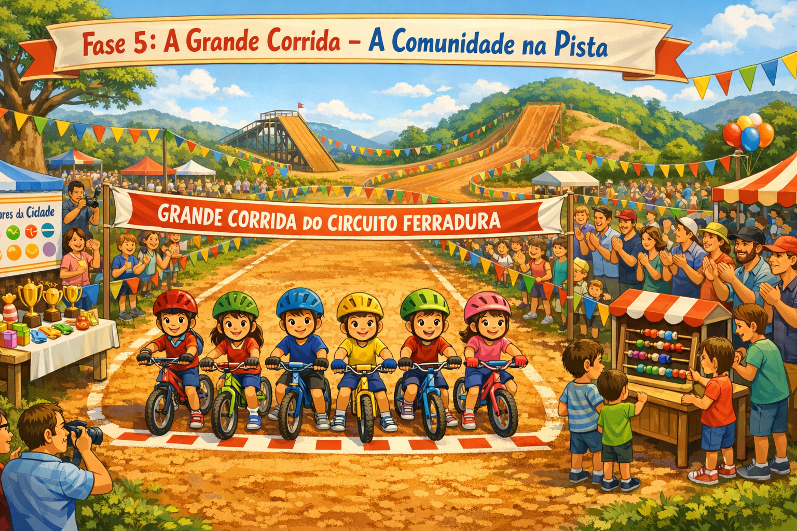

Na reta final, só passa quem tem credencial. OAuth 2.0, OIDC e JWT são os portões da segurança digital — saber abri-los é chegar primeiro.

python-jose para JWT em Pythonpython-josePara reforçar OAuth 2.0, OIDC e JWT com uma narrativa complementar, visite o Reino OIDC antes de seguir para o projeto da fase.
Entrar no Reino OIDCImagina a largada: o fiscal pede sua credencial, você apresenta sua identidade, ele emite um crachá temporário. Esse crachá é o access token.
code_verifier secreto e envia só o code_challenge (S256): assim um código interceptado não pode ser trocado por outra pessoanonce aleatório: ele precisa voltar dentro do ID Token para impedir que um token antigo seja reapresentadoauthorization_codecode_verifier e recebe access_token + id_tokennonce do ID Token com o que enviou antes de usar a sessão# Simulador do fluxo OAuth 2.0 em Python
import base64
import hashlib
import secrets
import urllib.parse
CLIENT_ID = "circuito_ferradura_app"
REDIRECT_URI = "http://localhost:8080/callback"
SCOPE = "openid profile email"
code_verifier = secrets.token_urlsafe(64)
code_challenge = base64.urlsafe_b64encode(
hashlib.sha256(code_verifier.encode()).digest()
).rstrip(b"=").decode()
nonce = secrets.token_urlsafe(16)
state = secrets.token_urlsafe(16)
params = {
"response_type": "code",
"client_id": CLIENT_ID,
"redirect_uri": REDIRECT_URI,
"scope": SCOPE,
"state": state,
"code_challenge": code_challenge,
"code_challenge_method": "S256",
"nonce": nonce,
}
url = (
"https://accounts.google.com/o/oauth2/auth?"
+ urllib.parse.urlencode(params)
)
print(f"→ Redirecionar para:\n{url}")
troca = {
"grant_type": "authorization_code",
"code": authorization_code,
"redirect_uri": REDIRECT_URI,
"client_id": CLIENT_ID,
"code_verifier": code_verifier,
}Cada piloto tem um número no peito — único e verificável. O JWT funciona assim: três partes separadas por ponto, codificadas em base64url.
# Estrutura de um JWT
# HEADER.PAYLOAD.SIGNATURE
#
# Header → {"alg": "RS256", "typ": "JWT"}
# Payload → {"sub": "12345", "name": "Ciclano",
# "email": "ci@ferradura.dev", "iat": 1702930800}
import base64
import json
def decodificar_jwt(token: str) -> dict:
partes = token.split(".")
def decode_b64(valor: str) -> dict:
padding = "=" * (-len(valor) % 4)
dados = base64.urlsafe_b64decode(valor + padding)
return json.loads(dados)
header = decode_b64(partes[0])
payload = decode_b64(partes[1])
return {
"header": header,
"payload": payload,
"assinatura": partes[2][:20] + "...",
}
# Exemplo com python-jose (validação com chave pública)
from jose import jwt
claims = jwt.decode(
token,
chave_publica,
algorithms=["RS256"],
audience=CLIENT_ID,
)
print(f"Bem-vindo, {claims['name']}!")
OAuth diz "você pode acessar". OIDC responde "mas quem é você?".
O id_token contém as claims de identidade verificáveis.
# Claims típicas de um id_token OIDC
import time
ISS_ESPERADO = "https://accounts.google.com"
nonce_enviado = nonce
id_token_payload = {
"iss": ISS_ESPERADO,
"sub": "103456789012345678901",
"aud": CLIENT_ID,
"exp": int(time.time()) + 300,
"iat": int(time.time()),
"nonce": nonce_enviado,
"name": "Ciclano da Corrida",
"email": "ciclano@ferradura.dev",
}
def piloto_autenticado(claims: dict, assinatura_valida: bool) -> bool:
# assinatura conferida com a chave publicada em jwks_uri
if not assinatura_valida:
raise ValueError("assinatura inválida: token recusado")
if claims.get("iss") != ISS_ESPERADO:
raise ValueError("iss errado: token de outro sistema, recusado")
if claims.get("aud") != CLIENT_ID:
raise ValueError("aud errado: token emitido para outra aplicação, recusado")
if claims.get("exp", 0) <= time.time():
raise ValueError("token expirado, recusado")
if claims.get("nonce") != nonce_enviado:
raise ValueError("nonce não confere, recusado")
return True
# Token correto: aceito. email_verified não autentica ninguém.
piloto_autenticado(id_token_payload, assinatura_valida=True)
# Exemplo de token recusado: iss de outro sistema
token_recusado = dict(id_token_payload, iss="https://outro.example")
try:
piloto_autenticado(token_recusado, assinatura_valida=True)
except ValueError as erro:
print(erro)
Crie um micro-servidor Flask com duas rotas: /login (redireciona para Google OAuth)
e /dashboard (protegida — exige id_token válido na sessão).
Use python-jose para validar o token e exiba o nome do piloto autenticado.